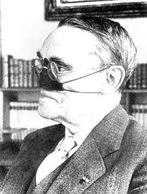
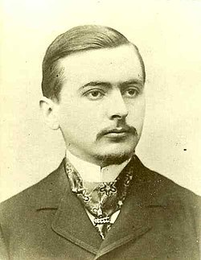

Complex Dynamics
Notes for complex dynamics. Content to be added.


← Back to Home
Content
- Julia and Fatou Sets
- Simple Examples of Chaos and Smooth Julia Sets
- Entropy and Dimension
- Polynomial Julia Sets
- julia and fatou set, dynamical parameter plane (connectedness locus, escape region, hyperbolic components, PCF polynomials, etc.), external rays, kneading theory, hubbard trees, topological entropy, thurston obstruction and combinatorics, transcendental dynamics (e, sin, cos family)